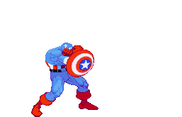

Graças à sua coragem e inteligência, o Capitão América tornou-se um grande herói e realizou
arriscadas missões ao lado de seu parceiro, o jovem Bucky Barnes. Infelizmente, em uma missão contra o
Barão Zemo, Bucky morreu em uma explosão e o Capitão América foi dado como morto quando, na verdade,
foi congelado e permaneceu em animação suspensa. Após décadas, ele foi encontrado pelos Vingadores,
a principal equipe de heróis do Universo Marvel, e tornou-se um de seus principais membros e até líder
da equipe em inúmeras ocasiões. Mas o Capitão tem também uma carreira solo e já salvou o mundo de
diversos perigos em muitas ocasiões, sozinho ou ao lado de parceiros como o Falcão e próprio Bucky,
que não morreu afinal de contas e voltou à ação como o Soldado Invernal.
